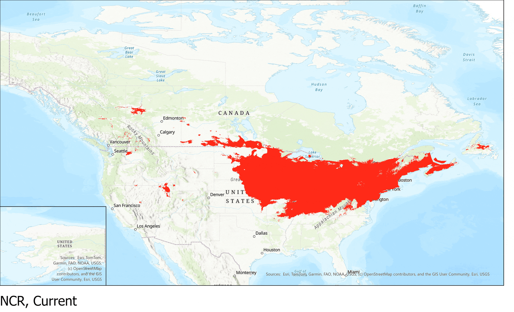
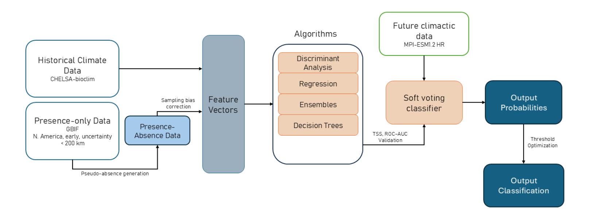
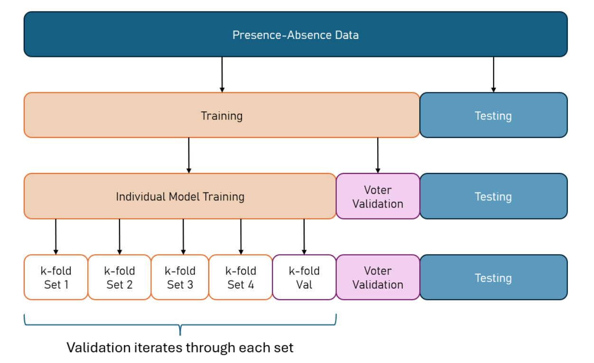

Species Distribution Modelling
I spent my summer at WWF (World Wildlife Fund) in DC! My main project there was analyzing where detrimental agricultural pests would migrate to over the next few decades due to climate change.
tl;dr The steps involved:
- Identifying the most detrimental pests through USDA census data and publications
- Locating the most detrimental pests through sightings on GBIF and iNaturalist.
- Generate pseudo-absence data (R), aka where pests have not been seen
- Train various models with stratified k-fold cross validation
- Calculate the best probability presence threshold using True Skills Statistic scores
- Checked Pearson's correlation scores between features to observe how similar features were
- Selected models with high ROC-AUC and TSS scores to create a voting classifier
- Use the voting classifier to predict future presences based on future climate data models (MPI-ESMI1.2 HR) and scenarios, also still optimizing the threshold.
- Report these findings! I displayed the generated geoTIFF files on ArcGIS Pro.
If you are curious about the steps in more depth, it is detailed further in my paper.
as well as the codebase.


Left: presence of corn pests by 2070 in an extreme shared socioeconomic pathway (SSP 5.85), right: spread of northern corn rootworms by 2070 depending on shared socioeconomic pathway scenario.

